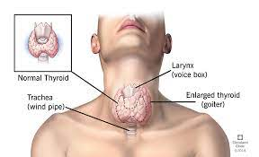

Goiter

SYMPTOMS:
The primary symptom of a goiter is noticeable swelling in your neck. If you have nodules on your thyroid, they may range in size from very small to very large. The presence of nodules may increase the appearance of swelling.
- difficulty swallowing or breathing
-
coughing
-
hoarseness in your voice
-
dizziness when you raise your arm above your head
CAUSES
Iodine deficiency is the main cause of goiters. Iodine is essential to helping your thyroid produce thyroid hormones. When you don’t have enough iodine, the thyroid works extra hard to make thyroid hormone, causing the gland to grow larger.
Other causes include the following:
- Graves’ disease
Graves’ disease occurs when your thyroid produces more thyroid hormone than normal, which is known as hyperthyroidism. The excessive production of hormones makes the thyroid increase in size.
-
Hashimoto’s thyroiditis
When you have Hashimoto’s thyroiditis, also known as Hashimoto’s thyroiditis, it predisposes thyroid to not being able to produce enough thyroid hormone, causing hypothyroidism.
-
The low thyroid hormone causes the pituitary gland to make more thyroid-stimulating hormone (TSH), which causes the thyroid to enlarge.
-
Inflammation
Some people develop thyroiditis, an inflammation of the thyroid that can cause a goiter. This is different than Hashimoto’s thyroiditis. One example is viral thyroiditis.
-
Nodules
Solid or fluid-containing cysts may appear on the thyroid and cause it to swell. These nodules are often noncancerous.
-
Thyroid cancer
Cancer may affect the thyroid, which causes swelling on one side of the gland. Thyroid cancer isn’t as common as the formation of benign nodules.
-
Pregnancy
Being pregnant can sometimes cause the thyroid to become larger.
DIAGNOSIS
- Blood tests
Blood tests can detect changes in hormone levels and an increased production of antibodies, which are produced in response to an infection or injury or overactivity of immune system.
-
Thyroid scan
Your doctor may order scans of your thyroid. This is usually done when your thyroid level is elevated. These scans show the size and condition of your goiter, overactivity of some parts or whole thyroid.
-
Ultrasound
An ultrasound produces images of your neck, the size of your goiter, and whether there are nodules. Over time, an ultrasound can track changes in those nodules and the goiter.
-
Biopsy
A biopsy is a procedure that involves taking small samples of your thyroid nodules if present. The samples are sent to a laboratory for examination.
TREATMENT
- Medications
If you have hypothyroidism or hyperthyroidism, medications to treat these conditions may be enough to shrink a goiter. Medications (corticosteroids) to reduce your inflammation may be used if you have thyroiditis.
-
Surgeries
Surgical removal of your thyroid, known as thyroidectomy, is an option if yours grows too large or doesn’t respond to medication therapy.
-
Radioactive iodine
In people with toxic multinodular goiters, radioactive iodine (RAI) may be necessary. The RAI is ingested orally, and then travels to your thyroid through your blood, where it destroys the overactive thyroid tissue.
-
Home care
Depending on your type of goiter, you may need to increase or decrease your iodine intake at home.
-
If a goiter is small and doesn’t cause any problems, you may require no treatment at all.